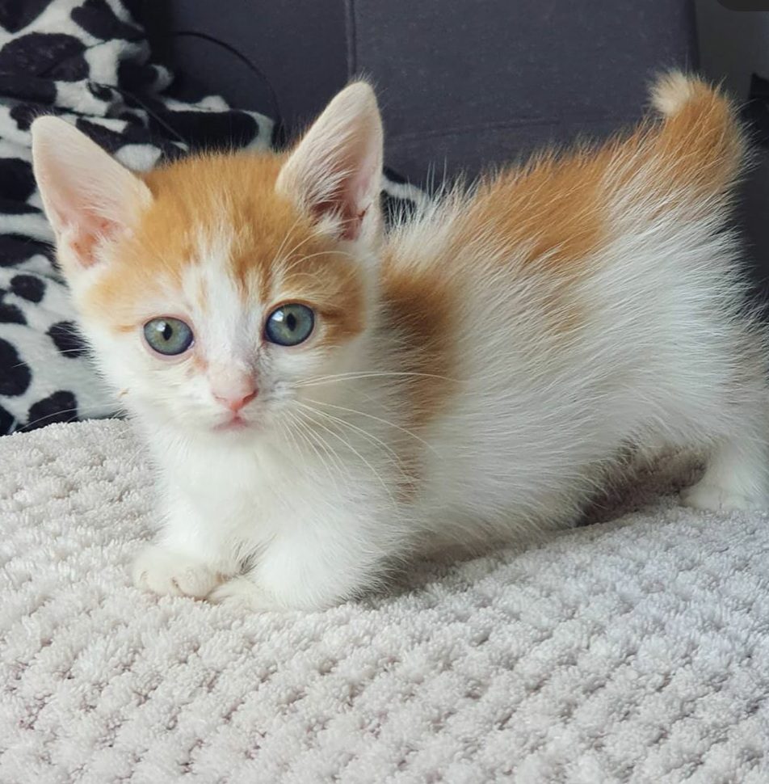
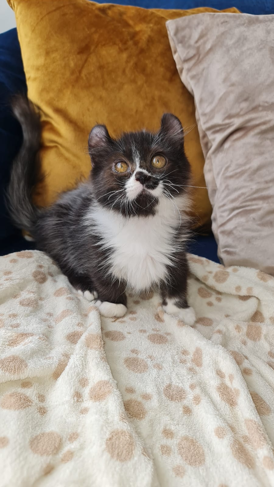
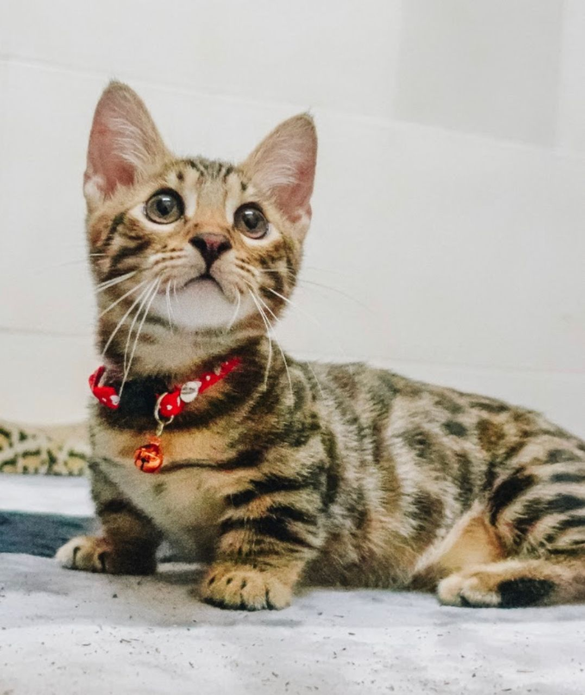

Categorías

MINUET O
NAPOLEÓN- 
MUNCHKIN
- 
KINKALOW

DWELF O
BAMBINOS
MUNCHKIN
FOLD- 
GENETTA
Cuidamos a tu gato como si fuera nuestro, porque su bienestar es nuestra pasión.
MINUET O
NAPOLEÓN
MUNCHKIN
KINKALOW
DWELF O
BAMBINOS
MUNCHKIN
FOLD
GENETTA
Encuentra a tu futuro compañero
Son una raza conocida por sus patas cortas debido a una mutación genética natural. Tienen un cuerpo de tamaño mediano, pelaje que puede...
Ver más

Es una raza que combina las características del Munchkin con las del Scottish Fold. Tienen las patas cortas del Munchkin y las orejas...
Ver más

Son una raza híbrida que combina las características del Munchkin y del Persian o Exotic Shorthair. Tienen las patas cortas del Munchkin...
Ver más
Es una raza híbrida que resulta del cruce entre el Munchkin y el American Curl. Estos gatos son pequeños, con las patas cortas del Munchkin y las...
Ver más
Son una raza híbrida creada para parecerse al serval africano, pero en un tamaño doméstico. Esta raza es el resultado del cruce entre...
Ver más

Dwelf: Estos gatos tienen patas cortas del Munchkin, la piel sin pelo del Sphynx, y las orejas curvadas hacia atrás del American Curl. Son de...
Ver más